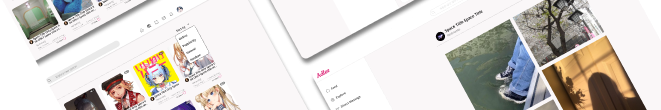
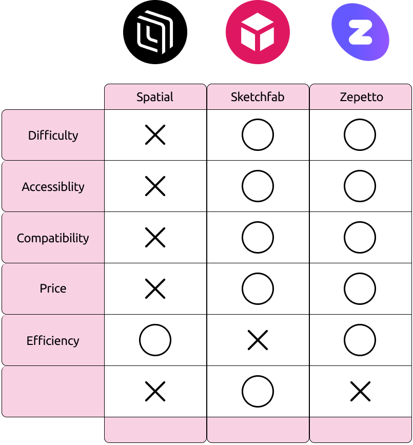
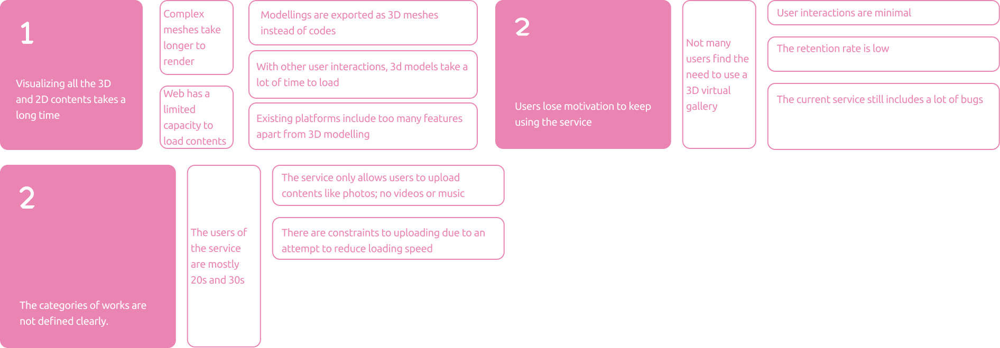
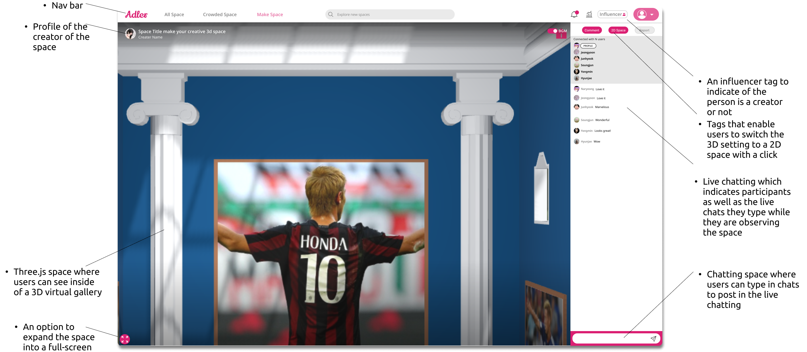
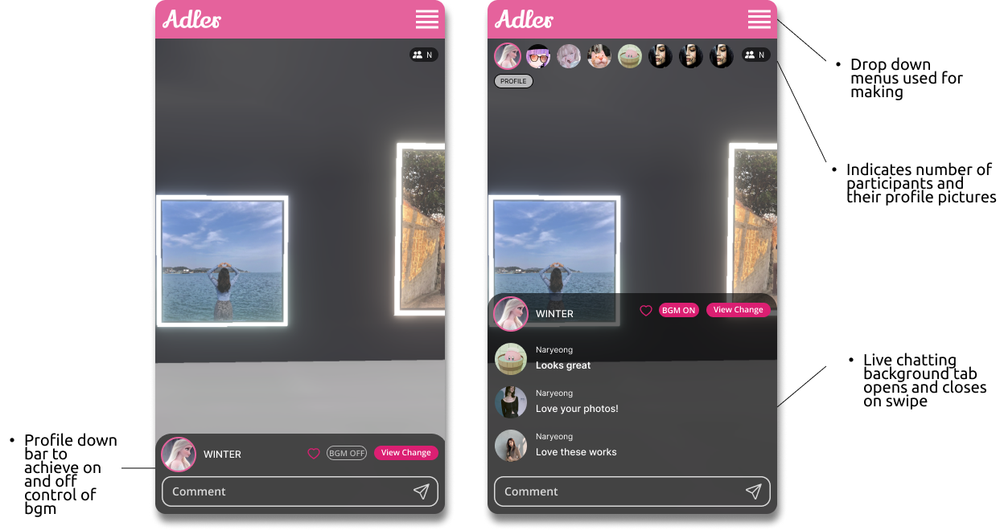

Adler
UI/UX Design
I interned at Adler as a user experience designer, a Seoul-based VR startup in summer 2022, designing a 3D VR SNS platform. The beta launch raised $2 million at a $6 million valuation. I focused on improving user interaction and implementing technical aspects like three.js for an enhanced SNS platform.
Methods
Tools
[ End product ]
3D SNS Gallery
The Beta version could be summarized as an application compatible with desktop and mobile settings where users can create virtual 3D galleries and promote contents of their choice.
[ Organizing Research ]
User Research
Visual Artists
Limited partnership opportunities and interactions with visitors.
Musicians
Limited 3D gallery features and lacked music upload due to speed issues.
Non-Artists
Limited decoration features for their 3D galleries with family photos and special memories.
From these Interviews, we were able to distinguish what improvements should be made to make a more easily accessible, customizable, Interactive and less time consuming upload process.
[ Market Analysis ]
Competitive Research
We researched different 3D platforms, finding issues like slow and complex VR experiences, compatibility issues, and user understanding gaps.

[ Insights ]
Main Insights from Interviews
Through interviews, we gleaned key insights into the challenges faced by artists and content creators using the space for promotions.
1. Users want to change the space easily while and after uploading contents.
2. Users want more functionalities with faster loading time of the gallery.
3. Users would like to communicate with each other online as if they were talking in real life.
4. Users want to access the spaces they create anywhere with no limitations of devices they use.
[ Defining Scope ]
Narrowing the Problem Space
After uncovering user pain points, we investigated and found that these issues stem from specific underlying problems.
1. Technical issues make it hard to improve the loading speed of the system while displaying high quality 3D modelling
2. Lack of varieties in the types of uploaded contents in the gallery spaces.
[ Synthesizing 1) ]
Stakeholder Mapping
We categorized users: primary—artists and content creators, secondary—art appreciators, tertiary—collaborating marketers.
[ Synthesizing 2) ]
Personas
We categorized personas as visual artists and online influencers to understand and address user pain points, refining our HowCanWe questions.
[ How Can We Questions ]
Top Three Questions
We narrowed down to three key questions addressing users' major pain points for SNIIP: enhance user interactions, simplify selection from a vast manga pool, and create a customizable environment for optimal user experience.
1. How can we allow users to feel comfortable to speak in the real time when they are in space?
2. How can we allow users to express themselves with a functionality that is faster to access compared to virtual 3D space?
3. How can we allow users to check what genres and categories are available to see what is trending or not?
[ Rapid Prototyping ]
Low-Fidelity Prototype: Sketches
For initial prototypes, we each sketched the entire product. We then selected the strongest elements from each member's sketches or merged assets for improvement.

[ Wireframing ]
Low-Fidelity Prototype: Combination
[ Break Downs ]
Final Designs
[ SpaceFeed ]
The space feed allows users to look at spaces he or she created. It give a layout including: descriptions of the post, other spaces recommended by the service for the user to visit, and other spaces that are currently active

[ Play Mode ]
The play mode allows users to experience an immersive 3D space by entering the space and controlling the viewpoint and the perspective.

[ Profile ]
Profile gives an overview of all the spaces created by the users along with the option to change the order in which these spaces are displayed. The profile of others has a follow button which users can click to decide to follow or stop following a person.
[ 2D Gallery ]
The 2D gallery allows users to view the uploaded photos in a more familiarized flat settings different from tne engaging 3D space, leaving the option to quickly switch to a more organized grid structure design when viewing the contents on desktop or phone.

[ Mobile Settings ]
Our team has managed to find a control mechanism on a smaller and compact mobile screen which allows the users to enter the space even when they are on mobile to experience a virtual 3D gallery.
